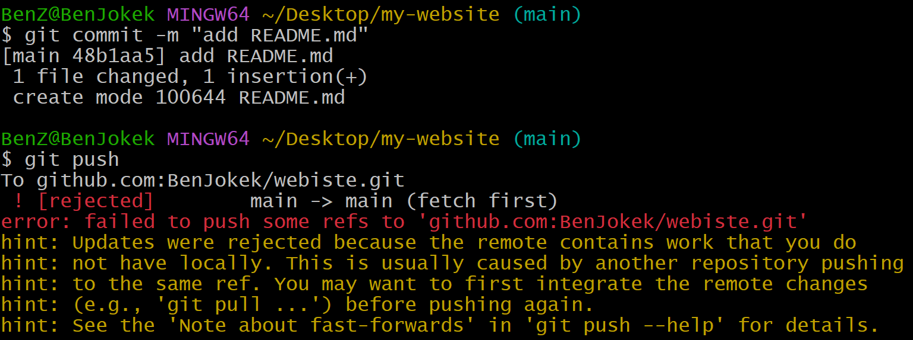
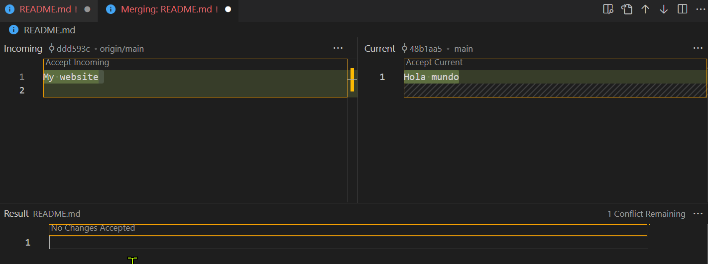
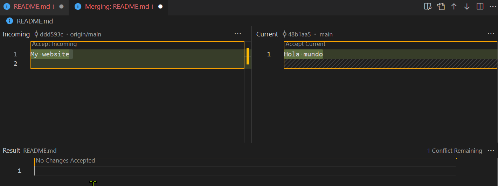

Clonar un repositorio remoto:
git clone [URL]
Esto crea un directorio nuevo, inicializa un Git Directory en su interior, descarga toda la información de ese Git Directory y saca una copia de trabajo de la última versión. Cuando clonas por primera vez un repositorio, todos tus archivos estarán Tracked y Unmodified pues acabas de sacarlos y aun no han sido editados.
Para poder colaborar en cualquier proyecto Git, necesitas saber cómo gestionar repositorios remotos. Estos son repositorios que están hospedados en Internet u otra red.
Ver los remotos configurados:
git remote -v
Deberías ver al menos origin que es el nombre por defecto del servidor de donde clonaste (suponiendo que no le hayas cambiado el nombre) y luego la URL. Te muestra uno para hacer fetch y otro para el push (en realidad son el mismo aunque podrías tener diferentes para cada cosa).
Añadir un remoto nuevo y asociarlo a un nombre de referencia:
git remote add [nombre] [URL]
Si habías creado anteriormente un repo local (en tu ordenador) puedes conectarlo a uno remoto con ese comando.
Ver información acerca de un remoto en particular:
git remote show [nombre-remoto]
Cambiar el nombre de la referencia de un remoto:
git remote rename [nombre-viejo] [nombre-nuevo]
Al hacer esto también cambia el nombre de las ramas remotas. Por lo tanto, lo que estaba referenciado como origin/main ahora lo está como [nuevo-nombre]/main.
Eliminar la conexión con un remoto:
git remote rm [nombre-remoto]
Obtener datos de tus proyectos remotos:
git fetch origin
El comando irá al proyecto remoto y se traerá todos los datos que aún no tienes de dicho remoto. Es importante destacar que el comando git fetch solo trae datos a tu repositorio local, no combina ni modifica automáticamente el trabajo que llevas hecho.
Ver commits del remoto:
git log origin/main main
Traer el contenido del remoto a tu Working Directory:
git checkout origin/main
(Volver a tu contenido en local con git checkout main)
Combinar los cambios:
git merge
Se verá un ejemplo práctico al final
Para traer datos y combinar automáticamente
(fetch+merge):
git pull
Si no hay conflictos en el código debería de funcionar.
Enviar tu proyecto al repositorio remoto:
git push origin [nombre-rama-local] (por defecto es la rama main o
master)
Este comando solo funciona si clonaste de un servidor sobre el que
tienes permisos de escritura y si nadie más ha enviado datos por el
medio. Si alguien más clona el mismo repositorio que tú y envía
información antes que tú, tu envío será rechazado. Tendrás que traerte
su trabajo y combinarlo con el tuyo antes de que puedas enviar datos
al servidor. Siempre haz git pull antes del
git push.
¿Cómo resolver un conflicto?
Ahora mismo no tengo un archivo "README.md" en mi proyecto, ni en el entorno remoto ni en el entorno local. Voy a crear uno en cada sitio pero con contenido diferente para provocar un conflicto cuando los quiera unificar. En el repositorio remoto le pondré "My website" y en el local "Hola mundo". Ahora cuando quiera hacer directamente push me saltará un error.

Como verán me recomienda hacer un git fetch primero.
Hagamos eso.
Ahora podemos investigar que diferencia hay entre lo que genera
conflicto. Podemos consultar los commits que se han hecho en el remoto
con
git log origin/main. Podemos contrastarlo con
git log main que es el que tenemos actualmente en nuestro
local.
También podemos movernos hacia la última "foto" del remoto con
git checkout origin/main, eso nos cambia los archivos de
nuestro Working Directory a como se encuentran en el
remoto. Podemos volver a nuestro proyecto local de vuelta con
git checkout main.
Con el primer comando pude notar que se había hecho un commit en el remoto donde se creó un "README.md". Con el segundo comando ("checkout") pude ir personalmente y corroborar que efectivamente ya había un README.md en el remoto y su contenido era "My website".
Resolvamos este conflicto de una vez por todas: git merge
Ahora nos salta un error diciendo que debemos resolver el conflicto y luego hacer commit. En este momento mi editor de código Visual Studio Code detecta la situación.
 

Como verás (click para agrandar) puedes resolver el conflicto desde el
mismo editor. Es muy intuitivo, modificas como quieres que quede el
contenido final y listo. Luego que resuelvas el conflicto arriba a la
izquierda puedes configurar lo que irá en el mensaje del commit y
commiteas. Ahora en tu historial de commits (git log)
quedaría el commit donde se agregó el README.md en el remoto, el del
local, y finalmente el merge. Ahora no debería haber conflictos y
podrías hacer git push en paz.